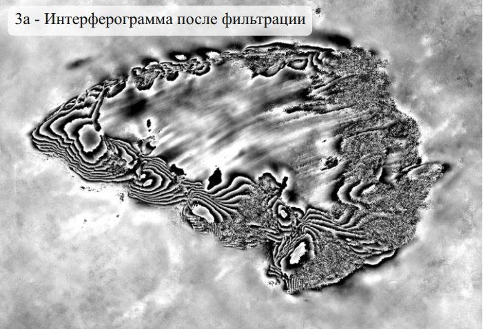
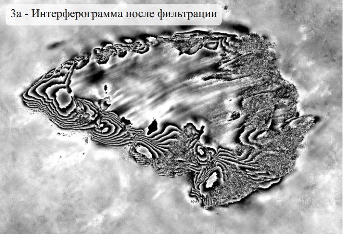
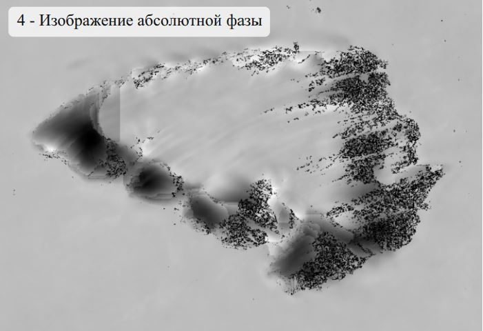
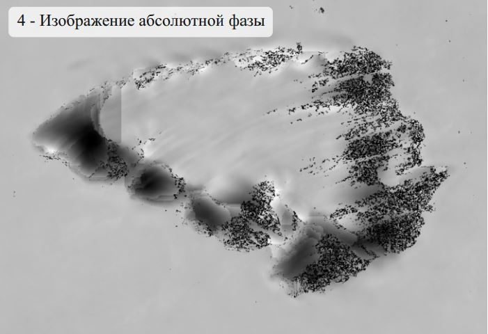

Скальный массив Улуру (Айерс-Рок) расположен в Австралии в административном районе Северная территория и
является одним из крупнейших массивов, возвышающихся над плоской равниной. Он имеет длину порядка 3,6 км,
ширину 3 км и высоту 348 м. Основная слагающая массив порода - песчаник, содержащий окислы железа, которые
придают ему красноватый оттенок. Расположенный в пустынной зоне, массив подвергается значительным суточным
перепадам температуры, что приводит к возникновению многочисленных трещин на его поверхности.
Для создания цифровой модели рельефа (ЦМР) в программе
SARscape использовалась интерферометрическая пара
снимков, полученных системой TerraSAR-X (параметры данных охарактеризованы в таблице ниже). Тренировочный
набор данных представлен на сайте оператора спутниковой системы TerraSAR-X/TanDEM-X
Airbus Defence and
Space. Как и требуется для интерферометрической обработки, данные получены при идентичных
параметрах съёмки и представлены в комплексном виде, что обеспечивает наличие как амплитудной, так и фазовой
составляющих
радиосигнала. Кроме того, достаточно удачно выбрана территория:
массив Улуру находится в пустынной зоне, где практически
отсутствуют растительность и осадки, которые могут привести
к снижению когерентности радиолокационных данных.
Характеристика данных на массив Улуру
| Съёмочная система |
TerraSAR-X |
| Дата съёмки |
12 и 23 февраля 2009 г. |
| Режим съёмки |
SpotLight |
| Поляризация |
HH |
| Размер пиксела, м |
1 |
| Угол падения излучения, град. |
45,6 - 46,1 |
| Виток орбиты |
Нисходящий |
| Уровень начальной обработки данных |
SLC - Single Look Complex |
Процесс создания ЦМР в SARscape достаточно автоматизирован, однако качество конечного результата во
многом зависит от
выбранных пользователем параметров обработки. Основные этапы обработки представлены на схеме ниже.

Технологическая схема интерферометрической обработки радиолокационных данных в программе
SARscape
1 - Первый этап обработки заключается в расчёте
интерферограммы, которая является результатом
комплексного перемножения основного изображения (master) и изображения, комплексно-сопряженного к
вспомогательному (slave), в результате чего формируется
разностно-фазовая картина поверхности, состоящая из
«фрингов» - полос, ограниченных двумя соседними линиями
равной фазы.
2 - Этап
устранения набега фазы подразумевает удаление
интерферометрических полос, которые образуются за счёт наклонного зондирования в том числе и на плоской
поверхности.
3а -
Фильтрация интерферограммы проводится для её
сглаживания и устранения шума, который складывается из
шумов радиолокационной аппаратуры, канала распространения радиоволн, системы обработки и
пространственно-временного нарушения когерентности снимков.
3б -
Когерентность характеризует согласованность (сходство) пары
изображений: близкие к единице значения когерентности
соответствуют высокой согласованности, близкие к нулю - низкой.
Когерентность является показателем фазовых шумов на
интерферограмме, необходима для оценки её качества и
выполнения некоторых последующих операций.
4 - Интерферометрическая фаза принимает значения от 0 до 2π, но её действительная величина может
выходить за эти
пределы.
Развёртка фазы позволяет восстановить её
абсолютные значения путём добавления или вычитания
кратного 2π числа к некоторому начальному значению.


Неразвёрнутая и развёрнутая фаза
5 - На последнем этапе производится
пересчёт значений
абсолютной фазы в абсолютные высоты поверхности, для чего
необходимо задание нескольких точек с известными координатами (x, y, z), определяющих превышение местности
над
опорным эллипсоидом. Для выбора точек использована
общедоступная цифровая модель рельефа SRTM. Результатом
пересчёта является матрица высот, трансформированная в
заданную картографическую проекцию.
Результаты основных этапов интерферометрической
обработки приведены ниже. Для сравнения с полученной по
данным TerraSAR-X цифровой моделью рельефа приведена
также модель SRTM (90 м) на этот же участок.


 

 
